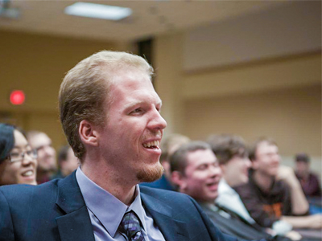
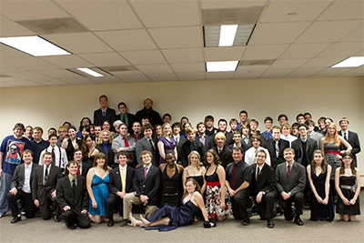

Computer Science House, founded in 1976, is one of the oldest and most active Special Interest Houses at Rochester Institute of Technology in Rochester, NY. Located on the third floor of the Nathaniel Rochester Hall dormitory, CSH provides a revolutionary living environment for over fifty on-floor students and many off-floor members as well.
In addition to RIT’s standard residence hall facilities, CSH has several unique, multi-purpose rooms, filled with technical and material resources for members to use. CSH’s computing resources include e-mail, newsgroups, database and web space services, our own wired network, and a multitude of servers and workstations — all maintained and operated by members. Hands-on learning is emphasized in order to give members a significant advantage in the professional world.
CSH is an exciting place to live and learn. There are always fun things to do, interesting projects to work on, and members who are eager to lend their expertise in a wide variety of subjects. Members share a feeling of kinship, belonging and commitment to each other and the floor. The atmosphere on floor is equal parts academic and social.

CSH organizes annual events Welcome Back, Halloween and Holiday Dinner parties. Other events such as educational seminars, study jams, stress-reliever luncheons, programming marathons, movie nights, Capture the Disk, Taste of Rochester, road trips and bowling nights occur frequently. Members also play intramural sports such as volleyball, dodge ball, soccer, and broomball together.
While much has changed over the years, CSH’s mission to help its members grow intellectually, socially, and professionally continues to succeed and surpass expectations.